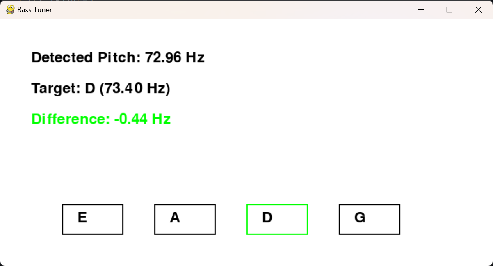
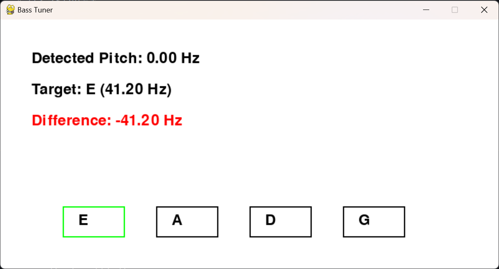
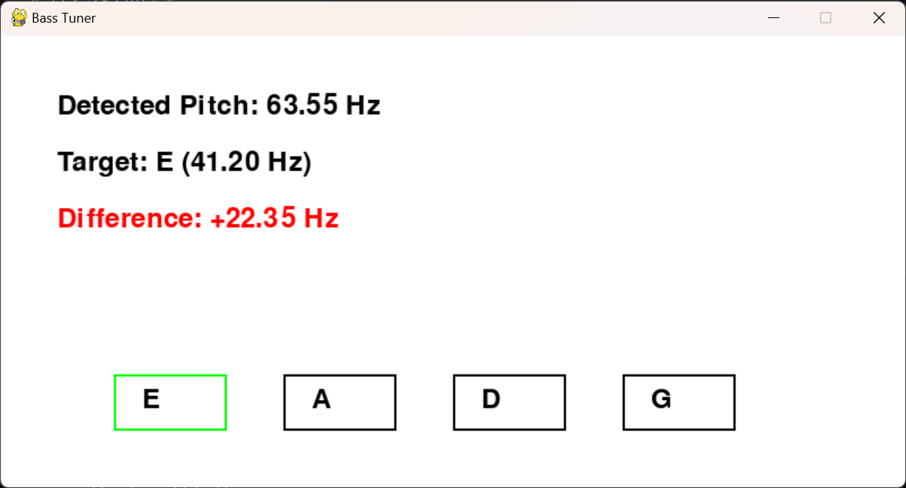
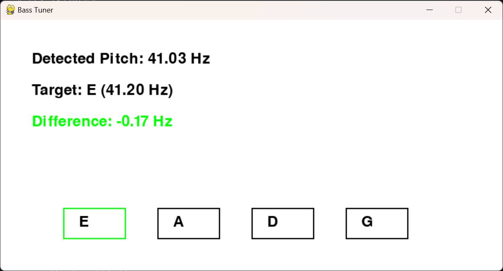
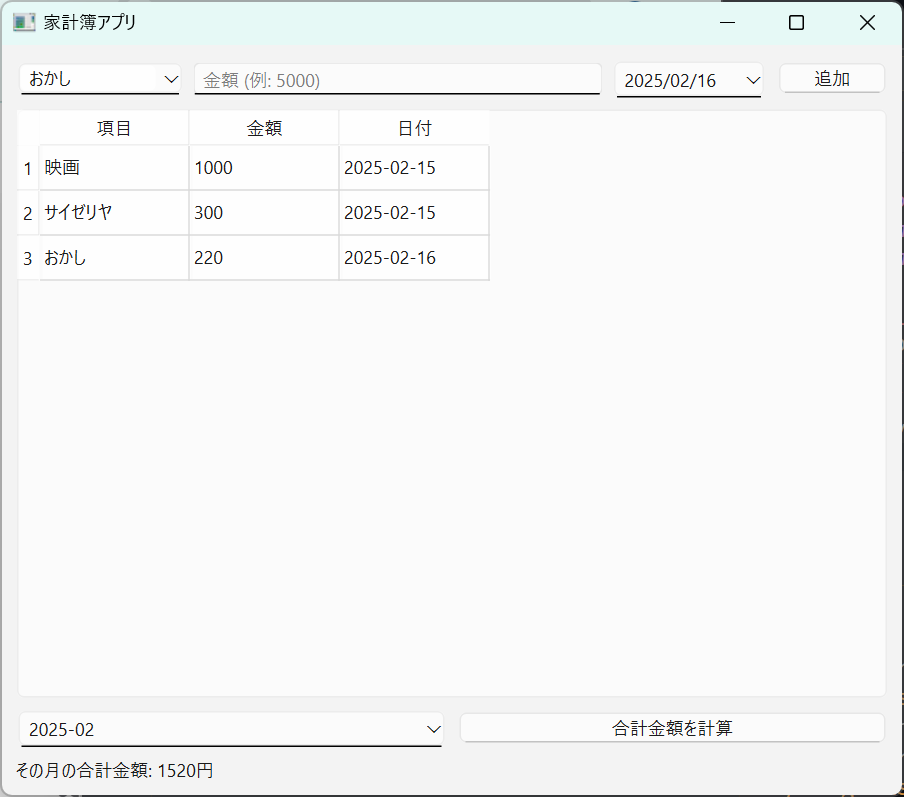
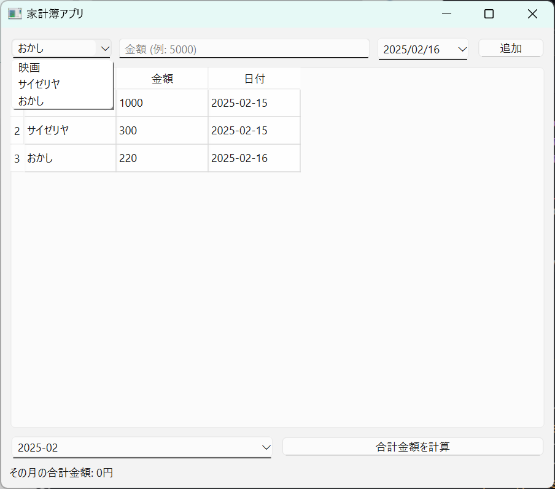
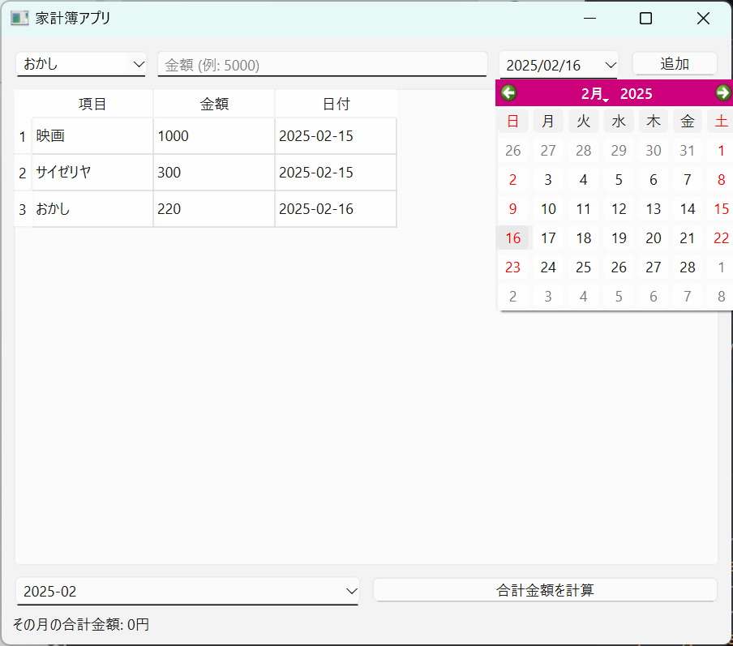
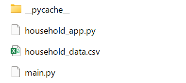
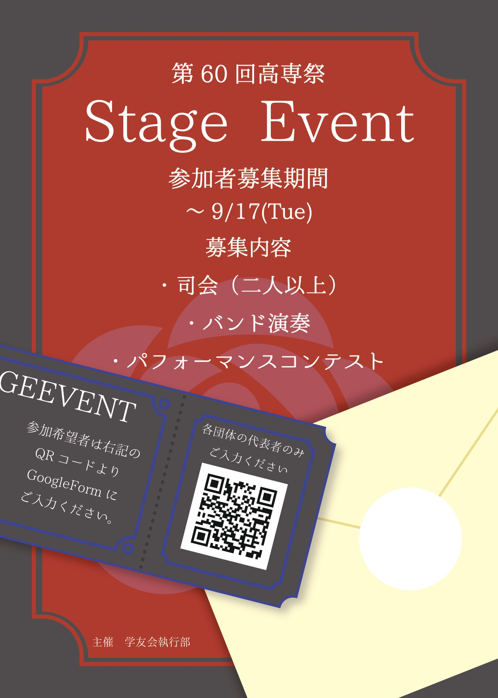
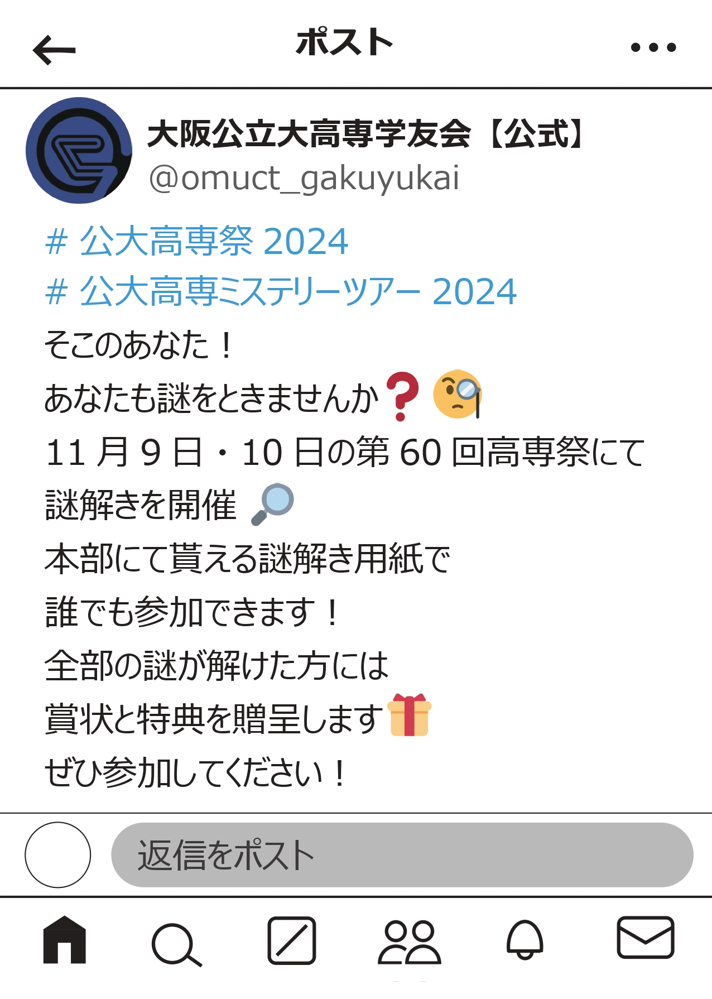

portfolio
♡About me♡
公大高専2年 Iコース
現代音楽部 ♰解き放たれし冥界のモンスター♰ ベースとボーカル
学友会執行部 広報課
趣味はベース、写真、おいしいものを食べること
skill
プログラミング
Python
授業で習った程度
Arduino
授業で習った程度
Scratch
授業で習った程度
HTML,CSS
授業で習った程度＋独学
その他
illustrator
執行部にて使用。独学でポスターを作れる。
CLIP STUDIO PAINT EX
独学。ある程度の機能を使いイラストやロゴを作成できる。
projects
プログラミング
プログラミング1課題4 アイドルプロデュースゲーム
リンク

プログラミング1の自由課題。
アイドルマスターのようなアイドル育成ゲームをPythonで作成しました。
第60回高専祭 知能情報コース展示 クイズリバーシ
リンク

クイズに正解すると石を置けるというルールのリバーシを班員で作成しました。
ロゴ作成、UIのデザイン、一部プログラミングを担当しました。
ベース用チューナー
リンク

制作時期2024年12月～2025年1月
日常使いできるようなシンプルなベース用チューナーを自由課題で作成しました。
pygame、sounddevice、numpy、librosaというライブラリを使用して、マイクで拾った音の周波数をとり、
それがE,A,D,Gの音階とどれだけずれているかを数値化し、表示させるという仕組みでチューナーを作りました。
使い方
detected Pitch:鳴らしている音の周波数
target:合わせたい音階の周波数
Difference:どれだけずれているかの表示

1.合わせたい音階のボタンをクリック
2.ベースを弾く。
この時Differenceの欄にどれだけずれているかが表示されるので、
プラスマイナスを見ながらペグを回す。

音階があっているときは文字が赤から緑に変化する。

3.他の弦も同じように合わせる。
家計簿アプリ
リンク
制作時期2025年2月
この家計簿アプリは、日々の支出を簡単に記録・管理できるPySide6を使用したGUIアプリです。
支出項目、金額、日付を入力すると、一覧表に追加され、自動的にCSVファイルに保存されます。

過去の入力履歴から項目を選択でき、日付はカレンダーで選択可能です。


特定の月を選ぶと、その月の合計支出を表示できます。
また、CSVファイルをExcelで確認することもできます。

データはアプリを閉じても保存され、継続的に家計管理ができます。
ロゴ作成
第59回高専祭 謎解きロゴ

高専祭展示 2⁷-4ロゴ

ポスター作製
第60回高専祭 ステージイベント募集ポスター

基本のデザインを担当しました。一部先輩の手直しあります。
第60回高専祭 謎解きポスター

すべてデザインを担当しました。